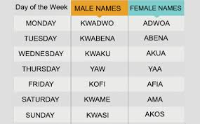
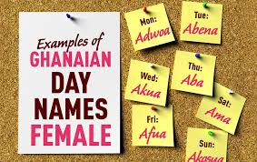
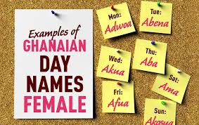
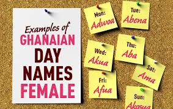

Akan Names
The Akan people of Ghana frequently name their children after the day of the week they were born and the order in which they were born. These "day names" have further meanings concerning the soul and character of the person. Middle names have considerably more variety and can refer to their birth order, twin status, or an ancestor's middle name.
The Akan, culturally and linguistically related tribes in West Africa, do the same as other African and Jamaican ethnic groups: Name their children after the respective day they were born. Over time, the Akan have defined seven names per gender, each referring to a day of the week.

 

